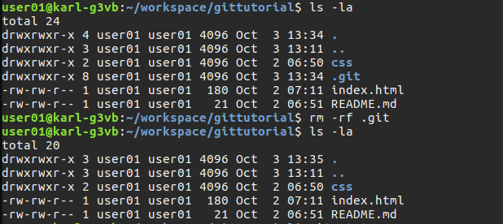

Git Commands in Detail
In this part of the tutotorial we will go over the most common Git commands in greater detail than we did earlier. Let's jump right in.
$ git init - Creating a New Git Repository
Using $ git init to create a new repository is straight-forward. Here are steps for creating a new project with $ git init
Create the project's root folder if it does not already exist.
$ mkdir sample-project
Make sure you are inside the projects root directory.
$ cd sample-project
Create the repository.
$ git init

$ git add - Add Files (& Directories) to Stage Files
As noted in an earlier part of this tutorial series, $ git add does not add the files to the repository, it adds them to a staging area in preparation to using $ git commit which will actually put them into the repository.
You do not have to add directories (i.e., folders) to Git as when you add files Git will preserve the directory structure. Let's go through an exercise to illustrate how $ git add works.
At the start of this exercise you project structure should look like below. If you do not see the .git/ directory it is likely you file manager is hiding hidden directories. Use the file managers preferences/options to unhide them.
We are going to delete the Git repository so that we can add the files again. In terminal, make sure you are inside the gittutorial/ directory.
Check the contents of the directory including the -a option to show hidden files
$ dir -la
Delete the .git/ directory
$ rm -rf .git
Check that .git/ is gone
$ dir -la
$ git status will show there is no longer a Git repository with the message, "fatal: Not a git repository (or any of the parent directories): .git"

Add a new empty repository
$ git init
$ git status will show that we have two files and one directory. However, as you know, there is a third file inside of css/ which $ git status does not show. Using the --all option will add all files at once, including the style.css file inside of css/.
$ git status
$ git add --all
$ git status

To a file into the staging area use $ git add.
$ git add index.html
$ git status
You don't have to type the full file name. I'll show you some shortcuts later in this post

$ git push - Pushing Code to GitHub
To move you files to GitHub use $ git push. We will first push our project changes to GitHub and then dive into an explanation of doing so.
The syntax of $ git push is:
git push [remote-name] [branch-name]
Since our remote-name is 'origin' and our current branch-name is 'master', execute the push command as follows:
$ git push origin master
When prompted, enter you GitHub user name and password.
That's it, your chnages are already in the GitHub repository! Take a look at your project's GitHub page to confirm the files are added.
It is worth taking a moment to realize that so far we have only used 3 commands, add, commit and push.
{kind=link}
Let's take a closer look at $ git push and its output.
$ git push origin master |
$git push moves you chnages from your local machine to GitHub. 'master', as you have already seen, is the current branch you are working on. 'origin' is a 'remote' (see next definition). It is a label that contains the path to the GitHub repository. |
*outline**
Master is branch ... know already
origin is the name of remote
Remote, explain 'remote'
url's - make clear that they are the git hub repository url's and compare them to the actual url's to make sure you are correct.
3 objects
master -&ght; master from local master to remote master
*/outline**
To understand origin you need to understand 'remote'. Remote refers to the repository on GitHub. Execute the below command.
$ git remote -v
Given the results in the screenshot it appears that 'origin' is a name for something that holds a URL, and it is. It is the name of the Git repository on GitHub, but not the name you gave it. Git assigned this name when you did the clone. You can change it if you want to but for the moment there is no need to.
You'll note that there is 'fetch' and 'push'. These are the URLs that Git will use to fetch data from and push data to GitHub.
master -> master
This means we move date from the master branch in our local repository to the master branch on the remote repository (i.e., the repository on GitHub).

In this section I will walk you through using some of the most common Git commands while creating a very simple website to illustrate their use. You can use whichever text editor you prefer, but since we isntalled Atom, let's use it.
Let's add a file to the project and then to Git.
In Atom, right-click on the project directory and choose .
Make the file contents as show as below.
<h1>Using Git with GitHub</h1>
<p class="green-text">This is some green text.</p>
<p class="blue-text">Some blue text here.</p>

$ git status
Switch to Terminal and make you current directory ~/workspace/git-github-tutorial.
$ cd ~/workspace/git-github-tutorial
Check your repositories status when the below command.
$ git status
Here is a view of words and phrases in the status
Now let's take a closer look at $ git status which we executed above.
| master | Git is like a tree. You can create branches to you tree. Each branch is a complete version of your project. The default branch is called 'master'. Look at your GitHub home page and find the dropdown that says "Branch: master".111 |
| origin | 'origin' is a name has associated with the repository on your local machine. As we will see later, it holds the URL to the repository on GitHub. |
| Your branch is up-to-date with 'origin/master' | This message means that the repository on your local machine matches the repository on GitHub. It does not mean that everthing in your project directory matches what is on GitHub. You probably need to understand 'commit' before you can understand this. So come back and read this again once you undertand 'commit'. |
| 'nothing to commit' | In a simple sense this means, 'you have nothing ready to make permenant in the repository'. In Git language it says you have nothing in the repository's staging area. |
| 'working directory is clean' | This means there is nothing in your project's directory that is not already in the Git repository on you local machine. It is not saying anything about the repository on GitHub. |
- Your branch is up-to-date with 'origin/master'
- While you have added a file to the project directory you have not added the file to the local Git repository so in fact the local and GitHub repositories are still the same.
- Untracked files
- index.html has not been added to Git yet so it is called 'untracked'
- nothing added to commit
- As you will see and do in a moment, 'commit' or 'committed' means 'has been added to Git'.

$ git commit
The next step is to commit the file. This is the final step to put the file into Git. However, note that the file will not be in GitHub yet.
When you perform a commit with the next command, you are committing everything in the staging area
$ git commit -m "initial commit"
-mmeans 'message'. So what follows is a message that will be associated with this commit. It is common practice when adding a file for the first time that the message is 'initial commit'. For future commits on a file, the commit message describes what has changed.
{kind=link}
$ git commit
Let's take a closer look at the message produced by $ git commit.
- [master e133f12]
- The commit was to branch 'master'
- initial commit
- This is the message entered with the commit
- 1 file changed
- Right, we changed 1 file
- 3 insertions (+)
- Three lines were added
- create mode
- A new file was added
- index.html
- The name of the file committed
{kind=link}
Add a remote
================================================================ ================================================================This screenshot is from a GUI/Git tool. It is showing the "3 insertions" that were referred to in the commit status message above. As you can see, 3 insertions means 3 lines.
I will address GUI tools v. command line later in this post.
pic.014.three.insertions.png
Shortcuts
Congratulations - you are now using Git & GitHub
This guide is a good learning experience and you can use its workflow to effectively work on a project. However it is not the right way to use Git. To effectively use Git in a way that allows you to manage the development life-cycle and to collaborate with other developers, you need to use 'branching'. I am currently working on a guide for branching. Subscribe to this blog to get notified when it is available.
See Also
- Git documentation, git-scm.com
- Git Cheat Sheet, GitHub
- Git Reference Manual, git-scm.com